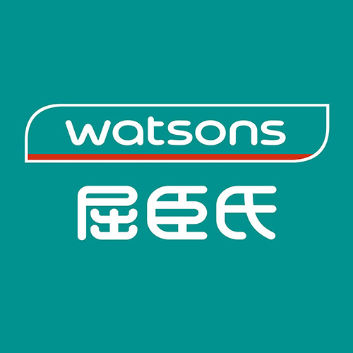

個人檔案

| 姓名：李灃庭 | 性別：男 | 星座：獅子座 |
| MBTI：INFJ | 個性：內向、害羞 | 興趣：跳舞、植栽 |
| 優點：負責任、有品味 缺點：躁鬱、自我意識強 | ||
| 個人名言：愛人先愛己 | ||
|
自傳 |
|
我叫李灃庭，來自宜蘭縣羅東鎮，畢業於羅東高商資料處理科，現就讀於中原大學資訊管理學系二年級。 興趣是跳舞、植栽，生性內向害羞。有充分的職場經驗，包括餐飲、服務、銷售等工作，力求多元多樣發展長才，盡早培養職場技能，賺大錢。 |
| 程式能力 | |
|---|---|
| Python | 95% |
| Java | 89% |
| HTML | 88% |
| CSS | 85% |
工作經歷
|
宜蘭縣童玩藝術節(2022、2023) 在活動期間販售與推銷文創商品，活動結束後轉調至宜蘭縣文化局協助事務。 |
|
|
佐丹奴(2022) 銷售及推銷服飾、收銀、整理檯面、倉庫、庫存盤點。 |
|
|
紅樓夢創意鐵板燒(2021~2023) 外場工讀生、送菜、結帳、收桌、洗碗。 |
|
|  |
屈臣氏(2023) 收銀、介紹商品、整理商品檯面、推銷自家商品、提高換購率。 |
學歷
|
羅東國小 2010年~2016年，學習階段的起始點 |
|
|
羅東國中 2016年~2019年，國中時光很開心，開始思考人生方向。 |
|
|
羅東高商 2019年~2022年，高中很荒謬但很酷，對人生方向感到迷茫。 |
|

|
中原大學 2022年~至今，開始對未來感到更加迷茫，選擇船到橋頭自然直。 |
專業技能
| TQC中文輸入證照 | 會計事務-資訊丙級 | 電腦軟體應用乙級 |
| 電腦軟體應用丙級 | 商教會二級證書 | 商教會三級證書 |
活動經歷
 |
||
| 高中時參加韓舞團，到蘇澳海事、羅商歲末及跨年晚會等進行舞蹈表演， 在韓舞團也結識許多很好的朋友，讚喔。 |
||
專案經歷
管理學期末專案
大一下學期的管理學課程，我們透過期末的服務學習專案到動服社進行志工服務，
動服社的社員們與我們一起搬運狗舍所需要的鋪地碎石，以避免下雨時地上都是泥巴，
整體耗時兩小時多，非常辛苦但想到狗狗們的居住環境能變得更好就非常值得！